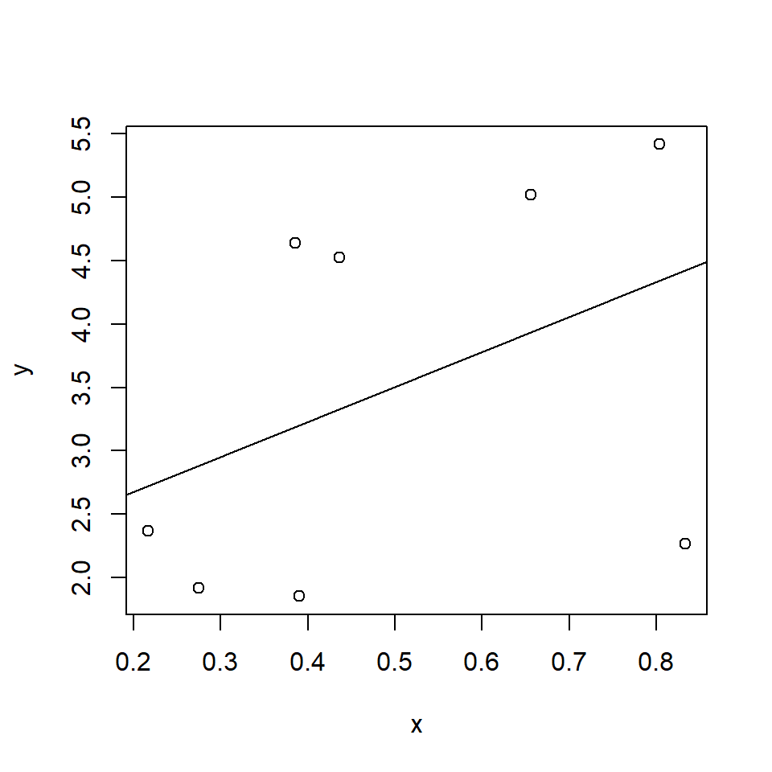

Chapter 13 Correlation and Regression
13.1 Introduction
We can think about ANOVA in terms of explaining a continuous variable by the different groups, a nominal variable, but what if both variables are continuous? In this case, we might still be interested in ascertaining whether there is a relationship between the variables and correlation can help. If we want to try and explain one variable with the other variable, we fit a simple linear regression model and this allows us to describe the relationship with an equation.
In this chapter we look at the two basic statistical concepts of correlation and simple linear regression.
13.2 Correlation
To illustrate the concept of correlation, one might ask the question “Is left leg length (LLL) associated with total height of a person?”
Figure 13.1: Scatterplot of total height and left leg length.
Does Figure 13.1 provide evidence that there is an association or correlation, as we say with continuous variables?
If you think that plot provided evidence of correlation, what about this data set (Figure 13.2)?
Figure 13.2: Scatterplot of total height and left leg length.
Or this one Figure 13.3?
Figure 13.3: Scatterplot of total height and left leg length.
It would be useful to have a method to objectively answer these questions. In this case, one undertakes correlation. Correlation asks the question “is there a relationship?” but not what the relationship is - for that we use regression (which we consider later). Here we will consider linear correlation but there could also be a non-linear relationship and then the statistic of association is called concurvity.
Correlation is typically indexed by a correlation coefficient (\(R\) or \(r\)) which takes a value from -1 to +1 where,
- -1 indicates a perfect negative relationship,
- 0 means no relationship and
- +1 indicates a perfect positive relationship.
The statistic \(r\) is the estimated (or sample) coefficient of the unknown population correlation coefficient, \(\rho\).
There are many types of correlation coefficients, but one frequently used is Pearson’s product moment correlation coefficient which, for two continuous variables denoted by \(x\) and \(y\), is given by:
\[r=\frac{\sum_{i=1}^{n}(x_i-\bar{x})(y_i-\bar{y})}{\sqrt{\sum_{i=1}^{n}(x_i-\bar{x})^2\sum_{i=1}^{n}(y_i-\bar{y})^2}}\] where
- \(n\) is the number of observations,
- \(x_i\) and \(y_i\) are values for observation \(i\),
- \(\bar x\) and \(\bar y\) are sample means for each variable.
For example, consider the contribution of left leg length to human height in a sample of men (using the data in Figure 13.1), we can use R to do the calculation; the variables LLL and TotalHeight are stored in a data frame hgt.
\[r=\frac{\sum(diffx)(diffy)}{\sqrt{\sum (diffx)^2\sum(diffy)^2}}\] where \(diffx = x_i - \bar x\) and \(diffy = y_i - \bar y\).
# Manual calculation of r
diffx <- hgt$LLL - mean(hgt$LLL) ####differences of x and xbar
diffy <- hgt$TotalHeight - mean(hgt$TotalHeight)
r <- sum(diffx*diffy)/sqrt(sum (diffx^2)*sum(diffy^2) )
print (r)[1] 0.8675782Thus, \(r = 0.868\); it is close to \(+1\) indicating a strong, positive relationship between LLL and total height.
The value can also be obtained by using the command cor where you supply it the two vectors of interest.
cor(hgt$TotalHeight, hgt$LLL)[1] 0.8675782Another alternative formula for the sample product-moment correlation coefficient is
\[r= \frac{\frac{\sum (x-\bar{x})(y-\bar{y})}{n-1}}{s_xs_y}\]
Or assuming the population correlation coefficient is of interest \[\rho= \frac{\frac{\sum (x-\bar{x})(y-\bar{y}}{N}}{\sigma_x\sigma_y}\]
The numerator here is called the covariance of \(x\) and \(y\) and so an alternative way to describe the formula is:
\[r = \frac{Cov(xy)}{\sqrt{Var(x)Var(y)}}\]
Q13.1 I have two random variables \(X\) and \(Y\). The variances of these variables are 2.5 and 4, respectively, and their covariance is -2.5. What is the correlation between these two variables?
Q13.2 Suppose I was to create a new random variable \(Z=X + Y\) from the previous question. What would be the consequence to the variance estimate of \(Z\) if I were to ignore the covariance of \(X\) and \(Y\) (assuming X and Y actually were correlated)?
13.2.1 Significance of \(r\)
Just like other statistics \(r\) can have a significance associated with it. The test is typically whether \(\rho\), the unknown population correlation coefficient, is different from one. So
\[H_0: \rho = 0\] \[H_1: \rho \neq 0\]
In fact, the significance is generated by a \(t\) test statistic with \(n-2\) degrees of freedom:
\[t = \frac{r \times \sqrt{n-2}}{\sqrt {1-r^2}}\]
In the case of the correlation of total height and left leg length, \(r = 0.868\) and \(n=100\) so
\[t = \frac{0.868 \times \sqrt{100-2}}{\sqrt {1-0.868^2}}= \frac{8.593}{0.497} = 17.289\]
The significance level associated with this test statistic is found from:
2*pt(q=17.289, df=98, lower.tail=FALSE) ###assuming a two-tailed test [1] 1.583346e-31Such a small \(p\)-value is perhaps not surprising in this case where \(r\) is close to one.
The confidence intervals for \(\rho\), the unknown population correlation coefficient are actually quite complicated involving a transformation of \(r\) to normalise it, then adding/subtracting an equivalent of the “\(se \times t_{\alpha/2, df}\)” term seen so frequently throughout this module, and then back-transforming back to scale of \(r\).
Unsurprisingly there is a function in R to compute the CI and conduct the hypothesis test.
cor.test (hgt$TotalHeight, hgt$LLL)
Pearson's product-moment correlation
data: hgt$TotalHeight and hgt$LLL
t = 17.27, df = 98, p-value < 2.2e-16
alternative hypothesis: true correlation is not equal to 0
95 percent confidence interval:
0.8090244 0.9090815
sample estimates:
cor
0.8675782 13.2.2 Correlation and causation
The causal correlation fallacy is the idea that just because there is a correlation, or indeed association, (in the case of categorical variables) between two (or more) sets of variables then there is a causal link. Obviously, causality implies correlation but correlation does not necessarily imply causation.
Variables might be correlated by
- chance
- another third variable which affects them both.
- genuine causation.
Figure 13.4 shows “Anscombe’s quartet,” a series of famous data sets that show identical correlation coefficients but probably negligible causation! The summary values of each variable are shown below.
Pearson's product-moment correlation
data: x1 and y1
t = 4.2415, df = 9, p-value = 0.00217
alternative hypothesis: true correlation is not equal to 0
95 percent confidence interval:
0.4243912 0.9506933
sample estimates:
cor
0.8164205
Pearson's product-moment correlation
data: x2 and y2
t = 4.2386, df = 9, p-value = 0.002179
alternative hypothesis: true correlation is not equal to 0
95 percent confidence interval:
0.4239389 0.9506402
sample estimates:
cor
0.8162365
Pearson's product-moment correlation
data: x3 and y3
t = 4.2394, df = 9, p-value = 0.002176
alternative hypothesis: true correlation is not equal to 0
95 percent confidence interval:
0.4240623 0.9506547
sample estimates:
cor
0.8162867
Pearson's product-moment correlation
data: x4 and y4
t = 4.243, df = 9, p-value = 0.002165
alternative hypothesis: true correlation is not equal to 0
95 percent confidence interval:
0.4246394 0.9507224
sample estimates:
cor
0.8165214 Each pair of variables (i.e.\(x_1\) and \(y_1\), \(x_2\) and \(y_2\), etc.) have identical \(r\) values!
Figure 13.4: Anscombe’s four regressions
Here is a slightly more modern version from the R library datasauRus. All the following data have an approximately identical albeit low \(r\).
[1] "dino"
Pearson's product-moment correlation
data: x and y
t = -0.76443, df = 140, p-value = 0.4459
alternative hypothesis: true correlation is not equal to 0
95 percent confidence interval:
-0.2267905 0.1013316
sample estimates:
cor
-0.06447185 [1] "away"
Pearson's product-moment correlation
data: x and y
t = -0.76034, df = 140, p-value = 0.4483
alternative hypothesis: true correlation is not equal to 0
95 percent confidence interval:
-0.2264633 0.1016730
sample estimates:
cor
-0.06412835 [1] "h_lines"
Pearson's product-moment correlation
data: x and y
t = -0.73161, df = 140, p-value = 0.4656
alternative hypothesis: true correlation is not equal to 0
95 percent confidence interval:
-0.2241632 0.1040704
sample estimates:
cor
-0.06171484 [1] "v_lines"
Pearson's product-moment correlation
data: x and y
t = -0.82368, df = 140, p-value = 0.4115
alternative hypothesis: true correlation is not equal to 0
95 percent confidence interval:
-0.2315243 0.0963843
sample estimates:
cor
-0.06944557 [1] "x_shape"
Pearson's product-moment correlation
data: x and y
t = -0.77767, df = 140, p-value = 0.4381
alternative hypothesis: true correlation is not equal to 0
95 percent confidence interval:
-0.2278491 0.1002267
sample estimates:
cor
-0.06558334 [1] "star"
Pearson's product-moment correlation
data: x and y
t = -0.74645, df = 140, p-value = 0.4566
alternative hypothesis: true correlation is not equal to 0
95 percent confidence interval:
-0.2253512 0.1028327
sample estimates:
cor
-0.0629611 [1] "high_lines"
Pearson's product-moment correlation
data: x and y
t = -0.81246, df = 140, p-value = 0.4179
alternative hypothesis: true correlation is not equal to 0
95 percent confidence interval:
-0.23062896 0.09732128
sample estimates:
cor
-0.06850422 [1] "dots"
Pearson's product-moment correlation
data: x and y
t = -0.71527, df = 140, p-value = 0.4756
alternative hypothesis: true correlation is not equal to 0
95 percent confidence interval:
-0.2228536 0.1054338
sample estimates:
cor
-0.06034144 [1] "circle"
Pearson's product-moment correlation
data: x and y
t = -0.81054, df = 140, p-value = 0.419
alternative hypothesis: true correlation is not equal to 0
95 percent confidence interval:
-0.23047593 0.09748136
sample estimates:
cor
-0.06834336 [1] "bullseye"
Pearson's product-moment correlation
data: x and y
t = -0.81344, df = 140, p-value = 0.4173
alternative hypothesis: true correlation is not equal to 0
95 percent confidence interval:
-0.2307071 0.0972395
sample estimates:
cor
-0.06858639 [1] "slant_up"
Pearson's product-moment correlation
data: x and y
t = -0.81371, df = 140, p-value = 0.4172
alternative hypothesis: true correlation is not equal to 0
95 percent confidence interval:
-0.23072883 0.09721679
sample estimates:
cor
-0.06860921 [1] "slant_down"
Pearson's product-moment correlation
data: x and y
t = -0.81813, df = 140, p-value = 0.4147
alternative hypothesis: true correlation is not equal to 0
95 percent confidence interval:
-0.23108127 0.09684801
sample estimates:
cor
-0.06897974 Figure 13.5: Datasaurus regressions
Q13.3 A television advert for Booster breakfast cereal claims “that people who start their day with a healthy breakfast like Booster actually lose more weight than those who skip breakfast.”
Does this support a causal link between healthy breakfast cereals and weight loss?
13.3 Regression
Correlation asks the question “Is there a (linear) relationship?” A more interesting question might be “Is there a (linear) relationship and what is it?” i.e. what is our best estimate of the equation relating the two variables; linear regression allows us to do this. Here we will explore this using the environmental impact assessment (EIA) data and other datasets we have already encountered, for example, we might use variables in the EIA data to predict depth (Depth) at a particular location.
Regression is a way to study relationships between variables. There are three main reasons why we may want to do this:
- Description: It can be useful to describe relationships (without necessarily really explaining them. For example a spatial map of an animal species for example.
- Explanation: Genuine interest in the nature of the relationship between variables e.g. How is depth and penguin density related?
- Prediction: Using variables to predict others (e.g. using
DistCoastto predictDepth)
Linear regression models:
- contain explanatory (sometime called “independent”) variable(s) which help us explain or predict the behaviour of the response variable.
- assume constantly increasing, or decreasing, relationships between each explanatory variable and the response.
In simple linear regression, we consider only one explanatory variable in the regression model.
13.3.1 Exploratory data analysis
To analyse the EIA data properly would require some more advanced methods, but we can illustrate the basic principles of simple linear regression with these data.
First, we consider a potential relationship between the distance from the coast and the depth of the water (fairly trivial but it will illustrate the methods):
- We want to use a function of distance from coast to explain depth.
- Visualising the relationship between two numeric (and continuous) variables suggests using a scatterplot.
- By convention, we put distance from coast on the \(x\)-axis because this is the explanatory variable (and the function we are after is \(y=f(x)\)).
Figure 13.6: Relationship of distance to coast and depth.
The scatterplot (Figure 13.6) tells us:
- waters nearer the shore are shallower
- there is a positive relationship is apparent (i.e. as distance to coast increases so does the depth)
- (there are also stripes, which is interesting)
How can we formalise this relationship?
13.3.2 Model specification
13.3.2.1 Setting up the model
We will first explain this using generic data. Assume there is a variable \(X\) and a variable \(Y\), which is thought to be potentially dependent on \(X\). We can plot them out (Figure 13.7).
Figure 13.7: A scatterplot illustrating the relationship between \(X\) and \(Y\).
A linear/straight line relationship between \(X\) and \(Y\) might be a reasonable starting point; perhaps some lines like those in Figure 13.8 would be a good fit and summarise these data well.
Figure 13.8: Scatterplot with examples of possible fitted lines.
All the lines shown in Figure 13.8 have the same general form. What we want to do is find the ‘best’ model. A simple linear regression model has the form:
\[\textrm{response} = \textrm{intercept} + \textrm{slope} \times \textrm{explanatory variable} + \textrm{error}\] In notation form this can be represented as:
\[y_i = \beta_0 + \beta_1 x_i + \epsilon_i\]
where
- \(y_i\) refers to the individual values of \(Y\) indexed by \(i\),i.e. i = 1, …, n observations. This the response or the dependent variable.
- \(x_i\) refers to the individual values of \(X\) indexed by \(i\),
- \(\beta_0\) is the intercept parameter,
- \(\beta_1\) is the slope parameter, and
- \(\epsilon_i\) is an error term.
We use the data to estimate values for the intercept and slope.
13.3.2.2 The intercept (\(\beta_0\))
The intercept can be thought of in a few ways:
- The response value (under the model) when the explanatory variable(s) is/are zero
- Where the regression line cuts the vertical axis
- The expected value of the response (\(y_i\)) when \(x_i=0\).
13.3.2.3 The slope (\(\beta_1\))
The slope, or gradient, of the regression line is:
- the expected change in the response (\(y_i\)) when \(x_i\) increases by 1 unit.
13.3.2.4 The error term (a model for the noise)
A linear regression model might summarise the relationship between \(X\) and \(Y\), but not all the observations follow this linear relationship exactly. The error term (\(\epsilon_i\)) allows for deviations from this linear relationship:
- In the simplest version of regression described here (i.e. one explanatory variable) the error is assumed to be distributed normally in the \(y\) dimension i.e. the uncertainty is in the dependent variable not the x variable.
- The normal distribution has two parameters that describe it, the mean (\(\mu\)) and variance (\(\sigma^2\)).
- Since we are modelling the mean response, there is zero mean difference between the line and the observations;
- The variance of the errors (\(\sigma_e^2\)) is estimated as a part of the linear model fitting process.
This can be summarised as \(\epsilon_i \sim N(0, \sigma_e^2)\).
13.3.3 Which straight line to choose?
There are many possible straight lines as we saw in Figure 13.8:
We want values of \(\beta_0\) and \(\beta_1\) that look most plausible in light of our data
We want \(\beta_0\) and \(\beta_1\) which give the best fitting line - the regression line.
We can use least-squares to find the best fitting regression line.
13.3.3.1 The Least Squares (LS) criterion
A variety of criteria could be used to fit a “best fit” line. One often used criterion is the leat squares criterion. We want to choose values for the parameters that minimise the sum of the squared differences between the observed data (\(y_i\)) and the predictions under the model (\(\hat{y}_i\)). The LS criterion finds parameter estimates which minimise this:
\[\sum_{i=1}^n (data-model)^2=\sum_{i=1}^n (y_i-\hat{y}_i)^2 = SS_{Res} \]
The solid line in Figure 13.9 (our model for the signal) will be as close as we can get to the data (on average, based on vertical distances). Other fitted lines (e.g. like the red dashed line) will have a far higher sum of squared differences \(SS_{Resl}\).
Note other (possibly non linear) models may be better, but this is our best straight line model.
The vertical distances between the observed data and the best fit line are called “residuals”. The least square criterion obtains a line that minimises the summed squares of the residuals, typically abbreviated to “the sum of squares”.
Figure 13.9: A simple X-Y scatterplot with different regression lines; best fit line (black), less optimal line (red). The vertical difference (shown by the arrows) between the observations and the best fit line are the residuals.
Figure 13.10 allows you to choose a best fit line yourself. Can you find the best fit that minimises the sum of the square of the residuals? The red arrows indicate the residual lengths.
Figure 13.10: Exploring the line of best fit using residual sums of squares. You can see a live version by clicking here
13.3.4 Fitting the model: the details
The slope and intercept estimates can be found from the data using:
\[\hat{\beta}_1=\frac{\sum_{i=1}^{n}(x_i-\bar{x})y_i}{\sum_{i=1}^{n}(x_i-\bar{x})^2}\]
\[\hat{\beta}_0=\bar{y} - \hat{\beta}_1\bar{x}\] where \(\bar{x}\) is the mean of the explanatory variable and \(\bar{y}\) is the mean of the response.
Least squares is a useful criterion and it has another advantage; the least squares estimate for the gradient is also the maximum likelihood estimator for the gradient which has theoretical usefulness in more advanced applications.
13.3.5 Predictions
Having obtained estimates for \(\beta_0\) and \(\beta_1\), they can be used to obtain predicted, or fitted, values of the response:
\[\hat{y_i}=\hat{\beta}_0+\hat{\beta}_1x_{i}\]
We can then estimate \(Y\) for any given value of \(X\) (within reason).
13.3.6 The variance estimate
We can find the variance estimate for the error term (\(\sigma_e^2\)) as follows: \[\begin{equation} s^2 = \hat{\sigma_e}^2=\frac{1}{n-k-1}\sum_{i=1}^n(y_i-\hat{y}_i)^2 \end{equation}\]
where
- \(\hat{y}_i\) are the fitted values,
- \(n\) is the number of observations,
- \(k\) is the number of slope parameters estimated (in simple linear regression \(k=1\)).
This estimate (\(s=\sqrt{s^2}\)) is provided as the Residual Standard Error in the R output (see later):
- Remember, our model for noise is a single normal distribution - so this value indicates how wide/variable this distribution is.
- The model for noise implies points tend to be near the line; less likely to be far away (i.e. because the residuals are assumed to have a normal distribution with a mean of zero).
- However, this value is not the uncertainty on any given prediction from the model, see Chapter 17 for details on that.
13.3.7 Introduction to the matrix form
There is another way to consider the simple linear regression model which allows for efficient notation and reflects how the best fit line is fitted in practice, as well as allowing computation of more complicated models in the future. The generic equation of the line can be given as:
\[ Y_i = \beta_0+\beta_1 X_i + \epsilon_i \]
where \(Y_i\) is the \(i\)th \(Y\) variable and \(X_i\) is the \(i\)th predictor and \(\epsilon_i\) the error associated with the \(i\)th point.
For each datum in turn this would be
\[ Y_1 = \beta_0+\beta_1 X_1 + \epsilon_1 \] \[ Y_2 = \beta_0+\beta_1 X_2 + \epsilon_2 \] \[ Y_3 = \beta_0+\beta_1 X_3 + \epsilon_3 \]
etc.
The \(Y\)’s can be considered as single vector
\[ \mathbf{Y} = \left[\begin{array} {r} Y_1 \\ Y_2 \\ \vdots\\ Y_n \end{array}\right] \]
Likewise the right-hand side of the equation can be broken up as
\[ \left[\begin{array} {r} \beta_0 + \beta_1 X_1 \\ \beta_0 + \beta_1 X_2 \\ \vdots \\ \beta_0+\beta_1 X_n \end{array}\right] + \left[\begin{array} {r} \epsilon_1 \\ \epsilon_2 \\ \vdots\\ \epsilon_n \end{array}\right] \]
which can be turned into (for those familiar with matrices and matrix multiplication)
\[ \left[\begin{array} {rr} 1 & X_1 \\ 1 & X_2 \\ \vdots & \vdots\\ 1 & X_n \end{array}\right] \left[\begin{array} {r} \beta_0 \\ \beta_1 \\ \end{array}\right] + \left[\begin{array} {r} \epsilon_1 \\ \epsilon_2 \\ \vdots\\ \epsilon_n \end{array}\right] \]
If
\[ \mathbf{X} = \left[\begin{array} {rr} 1 & X_1 \\ 1 & X_2 \\ \vdots & \vdots\\ 1 & X_n \end{array}\right] \]
\[ \mathbf{\beta} = \left[\begin{array} {r} \beta_0 \\ \beta_1 \\ \end{array}\right] \]
and
\[ \mathbf{\epsilon} = \left[\begin{array} {r} \epsilon_1 \\ \epsilon_2 \\ \vdots \\ \epsilon_n \end{array}\right] \]
Then we get
\[ \mathbf{y} = \mathbf{X}\boldsymbol{\beta} + \mathbf{\epsilon}\]
Which for our fitted regression would be:
\[ \hat{\mathbf{y}} = \mathbf{X} \hat{\boldsymbol{\beta}} \]
Which is simply \(y_i = \beta_0 + \beta_1 x_i\), for all values of \(i\) in an economic way which allows scope for future complexity.
To illustrate matrix calculations, we fit a simple regression to eight observations:
set.seed(345)
x <- runif(8)
y <- 2 + x*2 + rnorm(8)
smallLM <- lm(y ~ x)
plot(x, y)
abline(coef(smallLM))
modelEst <- as.vector(coef(smallLM))
modelEst[1] 2.120458 2.763582The matrix \(X\) would be
XMat <- cbind(rep(1, 8), x)
XMat x
[1,] 1 0.2162537
[2,] 1 0.2747640
[3,] 1 0.3899251
[4,] 1 0.6557397
[5,] 1 0.4358664
[6,] 1 0.8034841
[7,] 1 0.3856799
[8,] 1 0.8333017So if we (matrix) multiply this by the model coefficients we get our predicted values (\(\hat{y}\)). We can see this if we compare the results of the matrix multiplication %*% to the fitted values found from the regression model object.
Compare:
XMat %*% modelEst [,1]
[1,] 2.718093
[2,] 2.879791
[3,] 3.198048
[4,] 3.932649
[5,] 3.325011
[6,] 4.340952
[7,] 3.186316
[8,] 4.423356to the fitted values:
fitted(smallLM) 1 2 3 4 5 6 7 8
2.718093 2.879791 3.198048 3.932649 3.325011 4.340952 3.186316 4.423356 13.3.8 Regression in practise
We can now return to the EIA example and use DistCoast to explain/predict Depth:
DistCoastis the explanatory variable (\(x_i\)=DistCoast)Depthis the response variable (\(y_i\)=Depth)- We have 31502 observations (\(i=1,...,31502\)) (observations right on the coast line have been removed)
- However, we have
Depthvalues whenDistcoast(\(x\)) is close to zero, but this is not guaranteed in many other situations; it is ill-advised to assume a linear relationship holds outside the range of the observed data.
In this example, the slope is the change in Depth (in m) for a 1 km increase in distance from the shore:
- A slope \(>0\) indicates a positive/increasing relationship
- A slope\(=0\) indicates no relationship (horizontal line)
- A slope\(<0\) indicates a negative/decreasing relationship
Depthis measured on a continuous scale
We can start by modelling the differences between the data and the model using a normal distribution.
N.B.
- There is not really a linear response in this example.
- The relationship looks quite complex so maybe something else is going on.
- As we shall see, assuming a simple linear model (i.e. a straight line relationship) in this example might be inappropriate.
13.3.8.1 Doing this in R
The data have been stored in an object called EIAData. The function used to fit a linear model is lm.
# Fit a regression using lm (linear model)
depthModel <- lm(Depth ~ DistCoast, data=EIAData)Note that when we write the regression equation we want to fit, we just need to specify \(\textrm{response} \sim \textrm{explanatory variable}\). The intercept and gradient terms get included automatically.
To look at the output, it is useful to use summary as a wrapper function:
summary(depthModel)
Call:
lm(formula = Depth ~ DistCoast, data = EIAData)
Residuals:
Min 1Q Median 3Q Max
-12.7798 -2.7073 0.1306 2.0266 14.7909
Coefficients:
Estimate Std. Error t value Pr(>|t|)
(Intercept) 2.145980 0.044140 48.62 <2e-16 ***
DistCoast 1.268106 0.004721 268.59 <2e-16 ***
---
Signif. codes: 0 '***' 0.001 '**' 0.01 '*' 0.05 '.' 0.1 ' ' 1
Residual standard error: 4.182 on 31500 degrees of freedom
Multiple R-squared: 0.6961, Adjusted R-squared: 0.6961
F-statistic: 7.214e+04 on 1 and 31500 DF, p-value: < 2.2e-16From the output we can obtain the regression coefficients:
- the intercept: \(\hat{\beta_0}=2.150\)
- the slope of the line: \(\hat{\beta_1}= 1.268\)
- the estimated standard deviation of the errors: \(s = \hat{\sigma}=4.18\)
Thus, the fitted line (shown in Figure 13.11) is:
\[\hat{\textrm{Depth}} = 2.150 + 1.268\textrm{DistCoast}\]
Figure 13.11: A scatterplot of depth and distance from coast with the least squares best fit line
It is worth looking at the summary output again, as well as an anova table output (equivalent to a one-way analysis of variance table). Using these functions in R tell you different information about the fitted model.
The output from the summary function tells you what the regression coefficients are and whether they are significantly different from zero.
# Summary of fitted model
summary(depthModel)
Call:
lm(formula = Depth ~ DistCoast, data = EIAData)
Residuals:
Min 1Q Median 3Q Max
-12.7798 -2.7073 0.1306 2.0266 14.7909
Coefficients:
Estimate Std. Error t value Pr(>|t|)
(Intercept) 2.145980 0.044140 48.62 <2e-16 ***
DistCoast 1.268106 0.004721 268.59 <2e-16 ***
---
Signif. codes: 0 '***' 0.001 '**' 0.01 '*' 0.05 '.' 0.1 ' ' 1
Residual standard error: 4.182 on 31500 degrees of freedom
Multiple R-squared: 0.6961, Adjusted R-squared: 0.6961
F-statistic: 7.214e+04 on 1 and 31500 DF, p-value: < 2.2e-16The anova table tells you about the variation about the best fit line.
# Analysis of variance table
anova(depthModel)Analysis of Variance Table
Response: Depth
Df Sum Sq Mean Sq F value Pr(>F)
DistCoast 1 1261676 1261676 72142 < 2.2e-16 ***
Residuals 31500 550898 17
---
Signif. codes: 0 '***' 0.001 '**' 0.01 '*' 0.05 '.' 0.1 ' ' 1There are connections between the two tables. For example, the \(t\) statistic (t value) in the summary statement, for DistCoast is directly related to the \(F\) statistic in the anova table.
\[t^2 = F\]
\[114.5^2 = 13112\]
We will return to the anova table later.
13.4 Summary
When we have two continuous variables, we are oftn interested in whether there is a relationship between them. A correlation coefficient measures the strength of a linear relationship. A simple linear regression describes the linear relationship when we want to use one variable to explain the other variable. Regression is a useful tool in statistics and can be extended to include many explanatory variables but first we consider the general framework of the linear model.
13.4.1 Learning outcomes
At the end of this chapter you should understand
- correlation and its constraints
- the need to be cautious in assigning causation, and
- simple linear regression.
13.5 Answers
Q13.1 Using the \(r= \frac{Covar(XY)}{\sqrt(Var(x))\sqrt(Var(Y))}\) formula.
\[r= \frac{-2.5}{\sqrt(2.5)\sqrt(4)} = -0.791\] Q13.2 If the variance of \(Z\) is calculated ignoring the covariance of \(X\) and \(Y\), then it will be overestimated as \(X\) and \(Y\) are being treated as independent (see earlier chapters for the addition rules for variances).
Q13.3 Assuming it is a real effect, there may be other reasons why Booster consumers lose more weight than breakfast skippers. They may have a more healthy, or active, lifestyle more generally, for example.